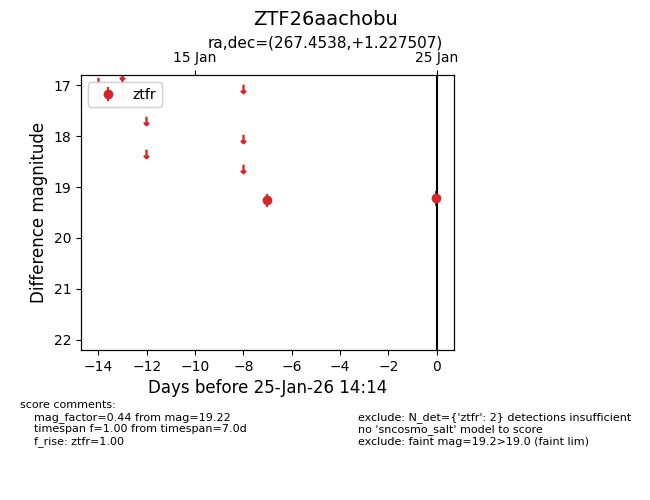
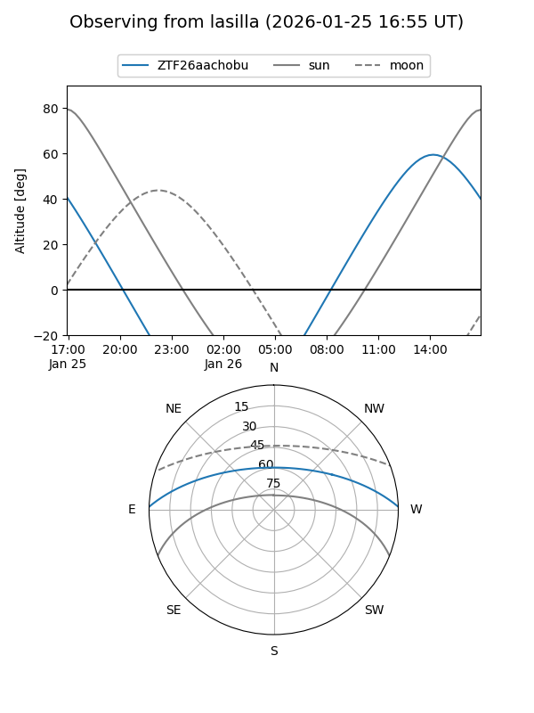
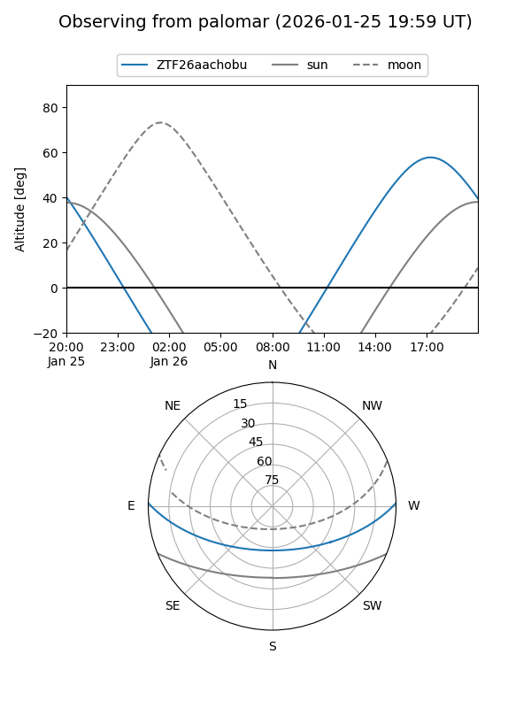

ZTF26aachobu
Target ZTF26aachobu at 2026-01-25 14:16
Aliases and brokers:
FINK: link
Lasair: link
ALeRCE: link
alt names
ZTF26aachobu (ztf,fink_ztf)
Coordinates:
equatorial (ra, dec) = 267.4538,+1.22751
equatorial (HMS+DMS) = 17:49:48.91,+01:13:39.03
galactic (l, b) = (26.8887,+14.24925)
Flags:
Photometry:
last ztfr=19.22
2 ztfr detections
Lightcurve

Visibility


Additional plots